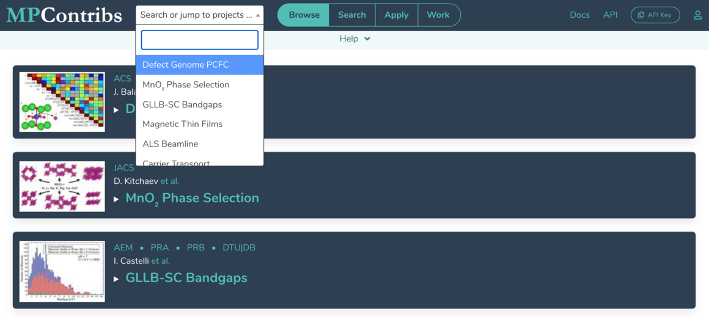
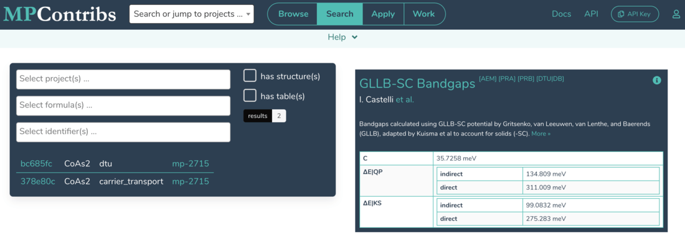
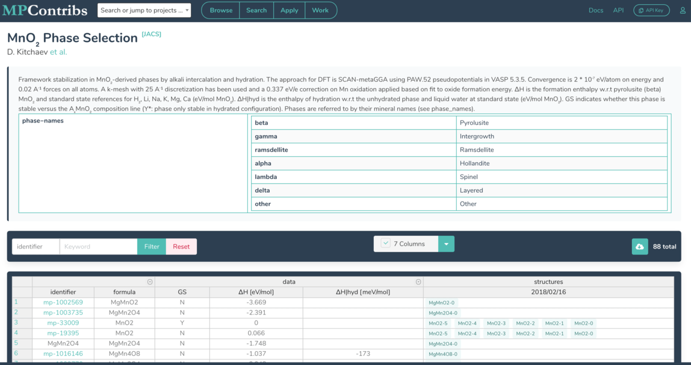
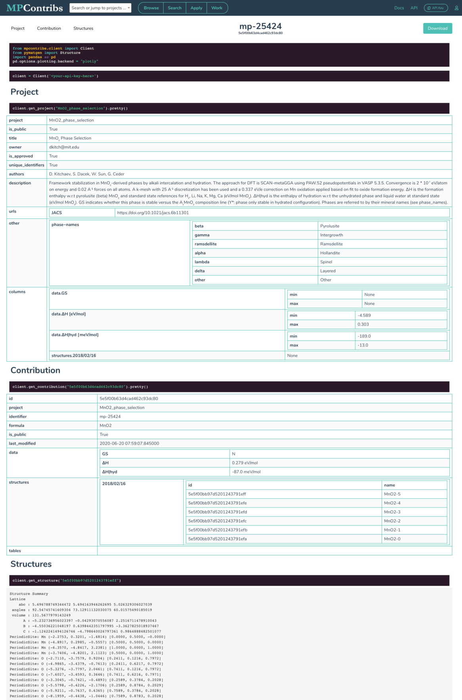

Explore Data

The Portal contains an entry for every contributed dataset which links to the respective landing pages. Each entry also includes the project title, its authors, and a small preview icon. Each project/dataset can contain many contributions for an MP material or composition. A dropdown menu is provided for quick access of project landing pages and includes a search box to filter project descriptions by keywords.

Search and preview of contributions across all materials and projects. When projects and/or material identifiers are requested, a preview card is generated and displayed for a couple of representative contributions. The title of the card links to the project's landing page, and the Details button opens the corresponding detail page. Authors and description are expandable, and references linked as footnotes. Each contribution card also contains its simple hierarchical data.
Dataset Landing Pages¶

Each project/dataset has a landing page with a unique URL on the MPContribs Portal. The page serves as entry point for contributors to share with their community and refer to an overview of their dataset in journals, for instance. In addition to a short title, description, authors and references, a landing page also contains a generic overview table listing all the project's contributions to MP materials or compositions. This default table provides a few important functionalities out of the box:
- Search Box: Filter the list of contributions by searching for specific sub-strings
in the MP material or composition identifiers as well as the first non-id column
(usually
formula). - Grouped Headers: Nested fields in contributions' hierarchical data[^1] automatically appear grouped in the table header. Units are also pulled into header next to the column name.
- Column Sort: By default, the table is sorted by contribution insertion order
(
natural). Any other column can be used for the table sort by clicking on the column name. Repeated clicks cycle through ascending, descending and natural order. - Pagination: Contributions are paginated in batches of 20. The pages can be iterated with the navigation at the bottom of the table.
- MP Details Pages: The first column in the overview table contains the MP material ID or the composition as identifier to link a contribution to the according entries in the core MP database.
- Contribution Details Pages: The second column links to the Details Page for a contribution containing a rendered version of the full database entry.
- CIF Files: If structures are part of a contribution, a
CIFcolumn is added to the overview table containing a URL to download the structure in CIF format. - Column Manager: Table columns to be shown or hidden can be selected via simple dropdown menu.
An optional but powerful component of landing pages are interactive overview graphs. These graphs are under full control and responsibility of the domain expert contributing the dataset. In most cases, they represent an interactive version of the accompanying journal publication which allows interested readers to dig deeper into a dataset. We use the graphing library Plotly which supports additional filter mechanisms and click events to link data points to their according contribution details pages.
Contribution Detail Pages¶

Each contribution in a dataset is assigned a unique identifier (see MongoDB ObjectId) which can be used to access its Contribution Details Page rendering an interactive version of its full content. For instance, the above screenshot is a truncated version of the detail page at
https://contribs.materialsproject.org/5ac08be3d4f144332ce7b785
A contribution consists of three (optional) components: free-form hierarchical data, tabular data, and crystal structures. The detail page is a static version of a fully functional Jupyter notebook using the MPContribs API Client and I/O python libraries. It contains code showing how to interact with a contribution programmatically along with the resulting output. The navigation bar at the top provides links to jump to a respective component, toggle buttons to show/hide components, and a download button to retrieve the contribution in JSON format.